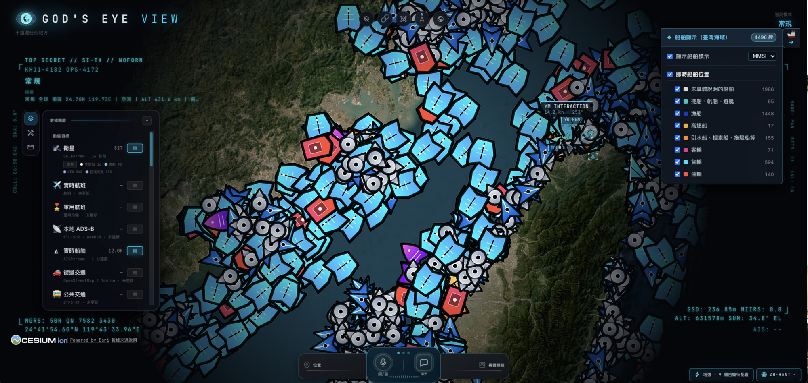

0. 專有名詞速查字典（給跨領域讀者的前置降落傘）
在進入底層渲染引擎與代理伺服器架構之前，我們先把幾個專案核心的地理空間情報（GEOINT）與公開來源情報（OSINT）術語，用一句生活比喻加上底層機制講清楚：
白話：網頁版的地球渲染引擎與「分塊載入的 3D 城市積木」。
機制：鏡頭拉遠時只載入粗糙地球，拉近到街區時才動態串流高解析度 3D 建築網格，避免瀏覽器記憶體一次載入全球模型而崩潰。
白話：飛機與船隻自動對外廣播的「公開身分證與定位訊號」。
機制：飛機透過無線電（1090 MHz）廣播經緯度、氣壓高度、航向（由 OpenSky、adsb.lol 地面站接收）；船隻則透過 AIS 系統廣播海上航跡。
白話：不用每秒問太空總署衛星在哪，拿到兩行數字就能自己算。
機制：從 CelesTrak 下載兩行軌道根數（TLE），瀏覽器在本地透過 satellite.js 執行 SGP4 物理模型與 GMST 恆星時對齊，即時算出 838+ 顆衛星的當前位置。
白話：真實海平面（MSL）跟電腦裡的完美數學橢球（WGS84）之間有 30～100 公尺的高低差。
機制：透過 geoid.js 查表補償（H_ellipsoid = H_msl + N_geoid），才不會讓降落中的飛機「鑽進跑道地底下」或「浮在半空中」。
白話：後端發給瀏覽器的「一次性入場券」。
機制：為了讓瀏覽器跟 OpenAI / Gemini 進行超低延遲的 WebRTC 即時語音通話，又不想把永久 API_KEY 暴露在前端 F12 裡，由本地 Node 伺服器代為向原廠換取短效臨時 Token。
1. 專案定位與核心價值：這座系統到底在幹嘛？
一句話總結：把好萊塢諜報片裡的「戰情室衛星監控台（God's Eye View）」搬進瀏覽器，但裡面跑的飛機、軍機、船隻、衛星、地震與街口監視器全都是真實的公開資料（OSINT）。
作者 Bilawal Sidhu（前 Google Creative Lab 3D 空間運算專家）原本在 YouTube 發布了一系列超過 500 萬觀看的空間情報視覺化影片，在社群強烈敲碗下將整套系統以 MIT 授權開源，並於 2026 年 8 月衝上 GitHub Trending 日榜與週榜雙料冠軍。
- 零金鑰即可啟動（Keyless-First）：全系統 21 個資料圖層中，有 19 個圖層不需要任何 API Key 就能直接跑（使用 Esri 衛星底圖、Re:Earth 免費地形、OpenSky 匿名航班、adsb.lol 軍機、CelesTrak 衛星、USGS 地震、NOAA 氣象、各國政府公開 CCTV 等）。
- 明確的倫理紅線（Responsible OSINT）：專案在
README.md明文規定只追蹤「事件、載具、基礎設施與系統」，嚴格禁止且拒收任何「搜尋特定自然人、人臉辨識、追蹤個人」的 PR。 - 從全局到第一人稱機艙（Cockpit Mode）：你可以從 40,000 公里的太空俯瞰全球海底電纜與衛星，下一秒點擊一架進場中的民航機，按下
C鍵直接坐進駕駛艙，開著 FLIR 熱成像或 NVG 夜視鏡跟著它降落。
2. 系統三層架構與資料流因果鏈
許多開源 3D 地球專案做成純前端 SPA，結果不是撞上 CORS 跨域阻擋，就是把私密 API Key 洩漏在前端，或是每 15 秒更新一次座標時飛機在畫面上「瞬移跳格」。gods-eye-view 採用了極為嚴謹的 「本地安全代理層（Vite + Node Middleware）＋ 瀏覽器 3D 狀態機 ＋ AI 語音與 MCP 工具鏈」 三層架構。
🔍 架構連線背後的工程因果：
-
為什麼瀏覽器不直接打公開 API，非要過一層
server/providers/？
一方面是為了金鑰隔離（如AISSTREAM_API_KEY使用 WebSocket 且無法在瀏覽器端限制網域，必須由 Node 伺服器維持單一長連線並快取，前端只輪詢本地/api/vessels）；另一方面是為了防禦與配額調節，代理層內建嚴格的 SSRF 防護、回應大小上限與 OpenSky / TomTom 額度控管。 -
為什麼飛機與船隻每 15～30 秒才更新一次，畫面看起來卻像 60 FPS 連續飛行？
系統刻意讓渲染時鐘落後真實時間一個更新週期，在兩個已知座標點之間進行平滑內插（Interpolation），搭配航位推算（Dead Reckoning）與每幀螢幕空間航向投影（iconOrientation.js），確保無論從正上方俯視或斜角觀察，機頭與船頭永遠指向真實世界航向。 -
為什麼語音 Agent 知道「我現在螢幕上看著哪條街、哪架飛機」？
透過src/agent/worldPacket.js，每當你開口詢問，前端會在零網路請求的情況下瞬間組裝一份 World Packet（含座標、開啟圖層、追蹤目標、250km 接觸清單與街景截圖），讓 AI 具備完整的空間感知。
3. DeepWiki 深度剖析：五大底層引擎與「版本落差」事實查核
當我們直接用 curl 抓取 https://deepwiki.com/bilawalsidhu/gods-eye-view 時，發現其網頁前端部署了 Vercel Security Checkpoint (WAF) 會阻擋自動化讀取。我們改用工程手段，直接對接 DeepWiki 官方後端的 MCP 端點（https://mcp.deepwiki.com/mcp），成功拉出完整的 12 大章節、42 篇子頁面（共 7,984 行） 的架構文檔，並與 GitHub 最新原始碼進行逐行核對。
⚠️ DeepWiki 與 GitHub 最新版（v0.3.0）的「架構演進差」查核表
工程驗證不能只看單一文檔。我們把 DeepWiki 內容與 GitHub 最新 Commit 交叉比對後，發現 DeepWiki 索引到的版本較舊，存在以下三個必須校準的事實差異：
| 查核維度 | DeepWiki 記載的舊狀態 | GitHub main (v0.3.0) 真實最新狀態 |
原始碼查核依據 |
|---|---|---|---|
| 前端 UI 框架 | 描述為「Vanilla JavaScript platform」，UI 邏輯集中在單一 src/ui.js |
已全面遷移至 Vue 3 (^3.5.44) + Pinia (^2.3.1) + vue-i18n，拆分為 407 個 src/ui/ 模組 |
package.json,docs/VUE-MIGRATION.md |
| AI 語音與聊天 | 僅記載 OpenAI Realtime API (gevRealtime.js) |
支援 OpenAI 與 Google Gemini (gemini-3.8-live) 雙引擎切換，新增免麥克風靜音 CHAT 面板與本機 Codex OAuth 免金鑰模式 |
README.md,server/providers/openai.js |
| 資料圖層與 MCP | 早期約 15 個圖層，無台灣 CCTV、無街景整合、無 MCP | 擴充至 21+ 圖層，新增台灣高公局 CCTV (taiwan.js)、4 大街景面板 (Mapillary / Google / KartaView / Panoramax)、ALPR 車牌鏡頭、風場/雷達/颱風與本地 MCP Server |
server/providers/cctv/taiwan.js,docs/MCP_SETUP.md |
4. 台灣在地亮點：高公局國道 CCTV 整合模組拆解 🇹🇼
在檢視後端原始碼時，我們發現 server/providers/cctv/taiwan.js 專門為台灣寫了完整的高速公路監視器整合模組，而且完全免金鑰即可在 3D 地球上觀看：
- 官方公開資料源：直接抓取交通部高公局（MOTC）公開的
https://tisvcloud.freeway.gov.tw/history/motc20/CCTV.xml（MOTC 2.0 XML 標準，每日更新約 1,800 支國道監視器，檔案約 1.2 MB，代理層上限設為 6 MB）。 - 全島南北 7 大錨點均勻抽樣：為了避免預設 600 支鏡頭上限（
DEFAULT_TAIWAN_MAX_SOURCES = 600）全部塞在大台北地區，程式碼明確定義了由北到南 7 個地理座標錨點：台北（25.033, 121.5654）、桃園、新竹、宜蘭、台中、台南、高雄（22.6273, 120.3014），確保全島國道都有監視器分佈。 - 串流轉單張影格代理（Stream-to-Frame）：將高公局北中南區伺服器（
cctvn/cctvn5/cctvc/cctvs.freeway.gov.tw）的 MJPEG 串流路徑自動轉換為單張 JPEG 路徑（如/abs2mjpg/bmjpg轉/abs2mjpg/jpg），直接投影進 3D 街道並支援拖曳 Gizmo 校準視錐（Viewshed）。 - 海外網路容錯退避：考量高公局主機偶爾對台灣境外網路不回應，內建 24 小時快取（
TAIWAN_LAST_GOOD_MAX_AGE_MS）與失敗後 1 小時退避（TAIWAN_RETRY_AFTER_FAILURE_MS），避免卡死整體的 CCTV 更新。
5. 資安模型與本地優先防禦（Threat Model）
檢視 SECURITY.md 與 server/standalone/key-setup.js，這套系統在「如何保護使用者的 API Key 與荷包」上展現了極高的工程水準：
- 預設僅綁定
127.0.0.1：無論執行npm run dev或docker compose up，預設只監聽本機 Loopback，外網與同區網他人皆無法連入。 - 嚴格的瀏覽器端金鑰白名單：透過
build/vite.js的define區塊，只有 3 把設計給前端公開使用的 Token（Google Maps API Key、Cesium ion Token、Mapillary Client Token）會進入瀏覽器；其餘所有私密金鑰（OPENAI_API_KEY、GEMINI_API_KEY、AISSTREAM_API_KEY、OPENSKY_CLIENT_SECRET、以及負責 Places/Geocoding 的GOOGLE_MAPS_SERVER_API_KEY）全部鎖在 Node 伺服器端。 - Docker Gateway 特權陷阱防護：在 Docker Bridge 網路中，宿主機瀏覽器連入容器的來源 IP 是容器 Gateway IP。若使用者將容器埠號開放給區網（LAN），區網內所有人的請求也會從同一個 Gateway IP 進來。因此文件強制要求在開放區網時設定
GEV_KEY_SETUP_TRUSTED_PEERS=none，關閉網頁端的金鑰設定面板（Provider Settings）。 - OpenAI 語音花費硬上限（Spend Cap）：即時語音 API 計費昂貴，系統內建即時費用計算器、$2 美元警告與 $5 美元強制斷線硬上限；同時支援直接讀取本機
~/.codex/auth.json的 ChatGPT OAuth 登入態，免 API Key 測試語音功能。
6. 本機 Docker ＋ uv 實測成果與驗收報告（已驗證通過）
我們已於 macOS 本機透過 Docker 容器（node:24.22.2-slim）＋ uv 0.13.6 隔離測試腳本 完成完整實機驗證。以下為實測環境狀態與自動化測試驗收結果：
針對實測時發現的 /api/vessels 回應狀態：
• HTTP 回應代碼：503 Service Unavailable
• 錯誤原因：{"status":"missing-key","error":"AISSTREAM_API_KEY is not set"}
• 機制因果：AISStream 官方不支援瀏覽器 CORS，且需要獨立長連線 WebSocket。在未設定金鑰時，系統會以 503 誠實回報 missing-key。此 Key 是完全免費申請的，只要至 aisstream.io 免費註冊取回 API Key，貼入右下角 POWER UP 面板，後端就會自動建立長連線並在地球上繪製全球即時船舶！
A. 自動化驗收報告數據（uv run verify_gev.py）
| 測試項目 | 請求路徑 / 動作 | 實測結果與指標 | 狀態判定 |
|---|---|---|---|
| Docker 容器健康狀態 | docker compose ps |
Up (healthy)，嚴格綁定 127.0.0.1:4173 |
✅ 通過 |
| Gateway 信任機制 | /api/setup/status |
成功信任 172.18.0.1，支援本機瀏覽器 Power Up 設定 |
✅ 通過 |
| 即時軍機資料流 | /api/military (adsb.lol) |
即時截獲 192 架 軍機訊號（ER35、CTM2081 等） | ✅ 通過 |
| 🇹🇼 台灣高公局 CCTV | /api/cctv/sources |
台灣 Pack 命中：提供 1,781 支 國道鏡頭，目前分派 243 支 | ✅ 通過 |
| 太空衛星軌道 TLE | /api/celestrak/stations |
成功拉取太空站 TLE（含 ISS 國際太空站、中國天和號） | ✅ 通過 |
| 3D WebGL 渲染與 GLSL 濾鏡 | Playwright 實機截圖 | Cesium Canvas 正常渲染、NVG/CRT 濾鏡與 HUD 快捷鍵響應順暢 | ✅ 通過 |
B. 實機渲染截圖存證（由 uv Playwright 自動捕捉）


C. 容器日常操作指引
# 1. 隨時用本機瀏覽器進入戰情室（已在背景健康運行）
open http://localhost:4173
# 2. 查看容器即時日誌（例如查看 CCTV 或航班拉取情形）
cd /Users/lanss/projects/2_Practice/tools/1151104_gods-eye-view/repo
docker compose logs -f
# 3. 停止與關閉容器（不遺失快取與設定）
docker compose down
# 4. 重新啟動容器
docker compose up -d7. 🇹🇼 臺灣海域航港局（MOTC MPB）實務對接與微光學圖形學擴充實證
在完成開源系統的基礎容器化驗證後，我們展開了進階本土化實戰：對接臺灣交通部航港局（MOTC MPB）免金鑰開放資料雷達源，將 9,000+ 艘臺灣周邊船舶即時動態整合進這套 3D 全球戰情中樞。
- 雙軌數據架構解耦：保留原版
/api/vessels（全球 AISStream）不受干擾，獨立增設/api/taiwan-vessels代理端點。內建 40s In-Memory 快取與並行請求合併，避免外部政府 API 遭擊穿。 - Awwwards / FWA 獲獎級 16 款微光學圖標：針對航港局 8 大船舶分類（貨船、油輪、客船、漁船、拖船、執法船、特殊船與其他），預先光柵化 48×48 小點陣圖與白金選取態，利用 WebGL Texture Atlas 合批技術達成 1 Draw Call 繪製 9,000 艘船。
- 尺度危機根本修復（Screen-Space 13.4px）：徹底修復早期 92px 巨型圖標遮蔽海峽的空間尺度事故，改採黃金比例固定 13.4px 螢幕像素，搭配 GPU 著色器視距階梯（航行船 8,000km 全域可見，靜止小船 280km 近景展開）。
A. 尺度事故與修復前後對照


B. 雙面板人機工效戰情台實測

若欲了解完整的 C4ISR 系統架構、GPU 圖形學合批原理、AI 時代 Agentic / MCP 協同規劃或全流程演進復盤，請參閱：
- 📖 God's Eye View 系統使用指南與發布手冊：端到端 Docker + uv 啟動與操作指南。
- 🏛️ 現代 C4ISR 態勢感知系統架構白皮書：30 年資深系統分析顧問 × AI 時代全景白皮書。
- 📊 臺灣海域即時船舶系統：工程實測與全流程演進實戰報告：人機協作全歷程總結。
8. AIS 航速與時間戳契約修復
快照系統對欄位語意很寬容：畫面上船還是在動。一旦要保存歷史，每個欄位的真實意義都會被放大。審查 2026-11-04 實抓的 8,951 筆上游資料後，確認 mpb-taiwan.js 有下列契約問題。
| 欄位 | 上游實況 | 修復前 | 修復後 |
|---|---|---|---|
Record_Time | 100% 為無時區字串 YYYY/MM/DD HH:mm:ss | epoch 用抓取時間；last_position_UTC 實為本地時間 | 依 UTC+8 解析，並驗證月份與日期 |
SOG | AIS 以 102.3 表示不可用 | 數字型別即原樣輸出 | aisSpeed 把 ≥ 102.3 轉為 null |
COG | 224 筆 ≥ 360（AIS 不可用） | 原樣當航向 | normalizeCourse 轉為 null |
| 型號 33 | 65 艘挖泥／水下作業船 | 落入 unspecified | 歸 special_ops，型號 34 不變 |
Record_Time 必須取代抓取時間。時刻為示意，日期解析範例取自驗收條件。unspecified 由 4,593 降為 4,531。解析測試在預設時區、TZ=UTC 與 TZ=America/Los_Angeles 下皆通過。
航速單位還有第二道防線。提示詞規定船速一律為「節」，Validator 再以 a2 規則拒絕「航速＋km/h」的輸出，因為 km/h 是國道車速的單位，模型在同一份 Context 裡確實可能混用。
9. GPS 漂移分級過濾演算法
上游快照裡，SOG < 0.5 的船約佔一半（4,441 艘）。它們的 GPS 位置會在原地抖動，若直接套用航行船的 30 公尺門檻，停泊船會不斷產生沒有意義的「移動」。
slow = p.s !== null && p.s < 0.5 // 未知航速不算停泊
minKm = slow ? 0.15 : 0.03
minMs = slow ? 1_800_000 : 600_000
skip = p.t <= prev.t ||
(p.t - prev.t < minMs &&
distanceKm(prev, p) < minKm)第一個條件防止定位時間未更新時重複寫入；40 秒快取之間，多數船都不會有新回報。第二個條件才是分級閘門，只有時間與位移同時未達標才略過。
| 指標 | 數值 | 含意 |
|---|---|---|
庫內 s < 0.5 點數 | 11,182／43,292 點（25.8%） | 此為點數佔比，與快照的船數佔比（約 5 成）口徑不同 |
| 停泊相鄰段位移中位數 | 52 m | 多數停泊段並未真正移動 |
| 位移 < 150 m 的停泊段 | 65.5%（共 5,868 段） | 這些點不是靠位移通過閘門 |
| 間隔 ≥ 30 分的停泊段 | 76.8% | 時間閘讓停泊船維持低頻心跳點 |
以上取自 2026-11-05 當下的航跡庫，定位跨度約 3.3 小時，腳本存於 backup/step10/evidence/track-drift-stats.py。
10. PAT SHA-256 閘門防護
AI 端點會觸發本機推論，所以它的風險不是資料外洩，而是被任意網頁或外部程式當成算力使用。防護分成兩層：本機同源瀏覽器不需權杖，其他客戶端必須帶 Bearer PAT。
| 威脅 | 防護 | 位置 |
|---|---|---|
| 惡意網頁跨站呼叫 | 帶 Origin 必須與 Host 完全一致，否則 403 | createAdvisorMiddleware |
| 代理或隧道偽裝本機 | admitKeySetupRequest 檢查迴路位址、Host 與代理標頭；另須同源 Fetch Metadata，或為帶 Origin 的 POST | isLocalBrowser |
| 權杖檔外洩 | 只存 SHA-256；檔案 0600，並以 O_NOFOLLOW 開啟、驗證權限 | createTokenStore |
| 時序側信道 | 定長摘要後用 timingSafeEqual；未設定權杖時仍比對全零摘要 | verify() |
| PAT 權限擴張 | 權杖路由非本機一律 403，外部 PAT 無法輪替或撤銷 | /api/taiwan-ai-token |
| 算力耗盡 | 單一推論鎖（429）、90 秒逾時、主體 ≤ 16 KiB | runOllama、readBody |
PAT 是 randomBytes(32) 產生的 256 位元隨機值，因此用快速雜湊即可，不需要 bcrypt 這類針對弱密碼的慢雜湊。比對 SHA-256 摘要還有一個好處：timingSafeEqual 要求等長輸入，摘要天生定長。
11. Grounding Validator 防幻覺因果鏈
Validator 不是一次設計完成的。backup/step7/ 保留了修復前版本，對照後能看到它在「安全」與「可用」之間來回校正。
*.pre-fix.bak、*.pre-unit-fix.bak 與現行程式碼比對整理。| 保護 | 機制 | 失敗時 |
|---|---|---|
| 輸入端 | JSON 皆為不可信引用資料；清除控制字元；欄位白名單 | — |
| 輸出端 | 緩衝全部 NDJSON，核驗通過才回傳 | grounding_failed |
| 模型不可用 | 狀態與串流錯誤統一處理 | ollama_unavailable |
| 來源異常 | source_error 時禁止宣稱 0 艘 | 確定性簡報說明來源異常 |
matched_total.vessels 一致，fallback_used=false，耗時 26.5 s，Context 3,580 bytes。邊界：規則確認每個值都能回溯，卻無法確認值與對象的配對。句子白名單移除後，把甲船距離寫給乙船的錯誤不會被攔下；需要逐項精確資料時，應以 Citations 或確定性檢索結果為準。